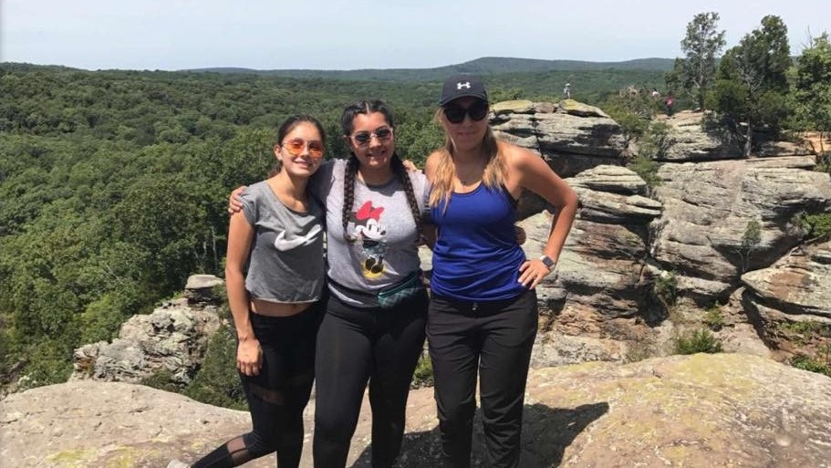
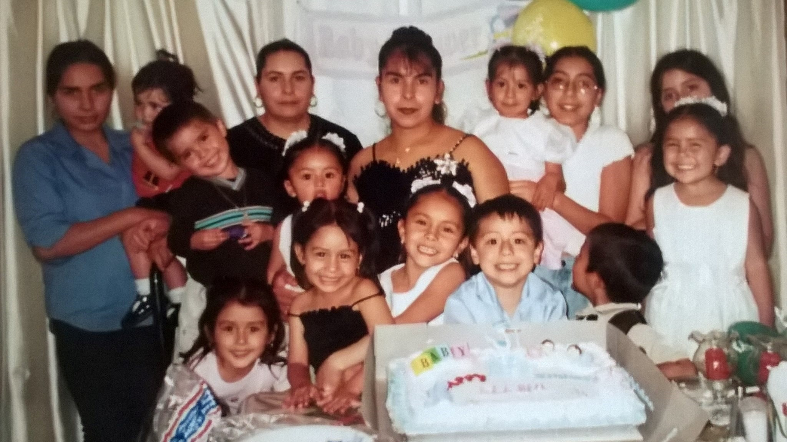
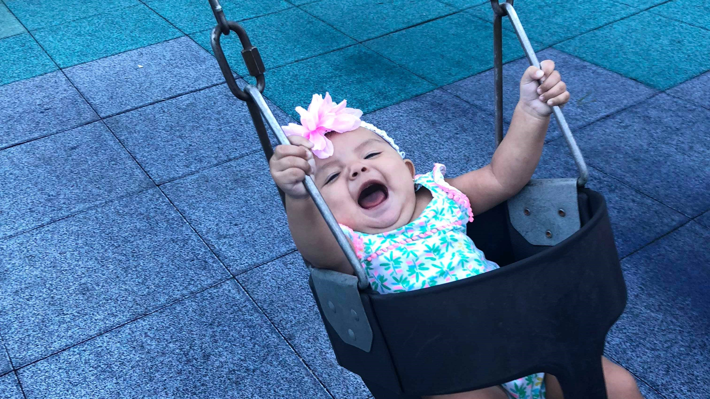
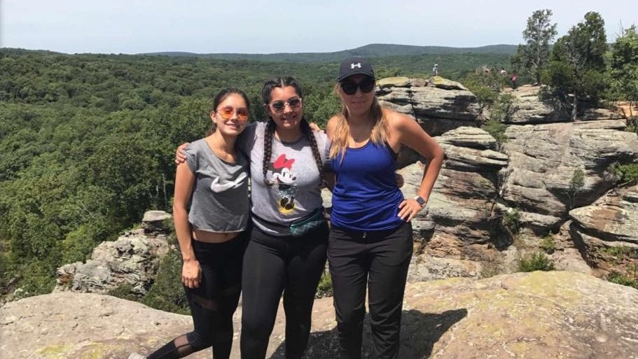
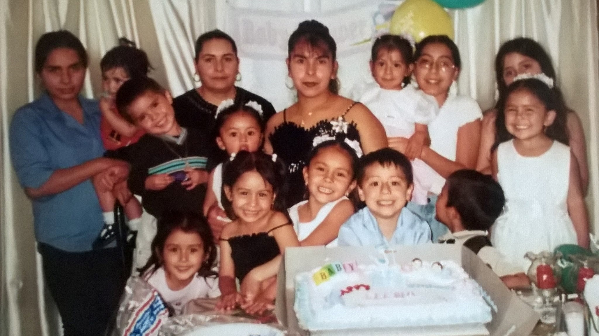
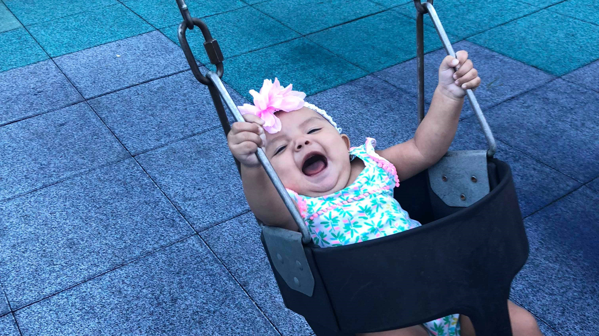

This website was created by the
grandchildren of Sabas and Margarita Avalos.
Our grandparents had a total of 11 children and they moved
to the United States where they raised us.
We created it for the purpose of keeping track of
how many of us there are, and to share a
little bit about ourselves.
There are currently
total cousins.
Below is a picture of our grandpa and his children.
 




